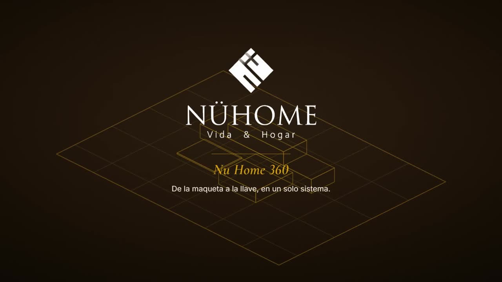

Integración de sistemas
Conectamos las herramientas que ya usas para que dejen de vivir aisladas entre sí.
Diagnosticamos tu proceso real, lo automatizamos a tu medida y nos quedamos después de la entrega.
Cada servicio nace del diagnóstico. Nada se vende suelto sin entender primero cómo trabaja tu equipo hoy: qué planillas usan, dónde se traba la información y quién carga con qué.
Conectamos las herramientas que ya usas para que dejen de vivir aisladas entre sí.
Tareas repetitivas de cobranza, reportes o seguimiento, hechas por el sistema, no por una persona.
Un panel que responde las preguntas que tu negocio realmente hace, no las que trae la plantilla.
Ajustamos el sistema a medida que tu negocio cambia, y medimos a los 30, 60 y 90 días. No es una entrega única.
Tú hablas con una persona; cada fase tiene a alguien del equipo detrás.
Nos apoyamos en las herramientas que tu equipo conoce, sin curvas de aprendizaje forzadas.
Partimos de una línea base y la comparamos a los 30, 60 y 90 días.
Tu proyecto se muda al barrio de la oficina, con su sala y un enlace para compartirla.
Cada proyecto parte del proceso real del negocio. Estos son algunos sistemas que diseñamos y construimos de punta a punta.

Un ciclo de venta largo —lead, reserva, escritura, facturación al inversionista, posventa y comisiones— vivía disperso en planillas, WhatsApp y papel. Construimos Fundos OS: una plataforma a su medida que digitaliza el ciclo completo con permisos por rol.

Haru Isidora (Arica) operaba con caja, máquinas de pago, apps de delivery y una planilla a mano: totales que no cuadraban y sin costo real por plato. Diseñamos Haru 360, un sistema a su medida que centraliza ventas, cocina, delivery, inventario y caja.

Nu Home fabrica casas modulares. Nu Home 360 junta en una sola plataforma todo lo que pasa entre el primer contacto y la entrega de la casa: ventas, cotizaciones, fábrica, bodega, pagos y un portal para cada cliente.
Cada proyecto tiene su local y su sala en BiPlot HQ, con sus pantallas y un enlace para compartirla. Recorre el barrio →
Una sesión corta para entender tu proceso. Si no hay algo real que automatizar, te lo decimos de frente.
Antes de BiPlot, un proceso de negocio pasó por el papel, el terminal, el software genérico y el ruido de mil herramientas. La línea es la misma en todas las épocas: hoy pasa por nuestra oficina, y lo que sigue es tu proceso.
Sin plantillas: el proceso real, primero. Todo proyecto pasa por el mismo motor, con alguien del equipo a cargo de cada fase. Tú hablas con una persona; el motor hace el resto.
Observamos cómo trabaja tu equipo hoy: qué planillas usan, dónde se traba la información, quién carga con qué. Sin apurar la solución.
EntregableMapa de tu proceso, dónde se pierde tiempo y la línea base.
Trazamos el proceso ideal para tu operación, no para una plantilla genérica: qué ordenar, qué automatizar y qué construir, en ese orden.
EntregableEl flujo ideal dibujado para tu operación.
Conectamos las herramientas que ya usas, en rebanadas cortas que funcionan solas. Cada una se prueba con uso real antes de aceptarla.
EntregableTus herramientas conectadas y funcionando.
Cada fase tiene a alguien a cargo, y todos trabajan en BiPlot HQ.Conócelos en la oficina
Visita guiada con Plotty · 79 s
BiPlot HQ es nuestra oficina dibujada, abierta en el navegador. Adentro trabaja el equipo que lleva cada fase; afuera, en el barrio, cada cliente tiene su local y su sala. Y ahí lo seguimos acompañando después de la entrega.
Diez integrantes, uno por parte del trabajo. Sabes quién lleva cada fase de tu proyecto.
Tu nombre y tu logo en el techo, y tus productos a la vista de quien pasa por el barrio.
Adentro, tus pantallas y tu historia. Un enlace para mostrarla a tus propios clientes: biplot.cl/oficina/tu-empresa
Soporte continuo, sistemas sanos y al día, y medición a los 30, 60 y 90 días.
El diagnóstico define el alcance real antes de cualquier número. Estos son los tres caminos más comunes.
¿Otra duda? Plotty te atiende en la recepción de BiPlot HQ. Conversar con Plotty →
No es el objetivo. Diseñamos la automatización para que se apoye en las herramientas que tu equipo ya conoce, en vez de forzar una curva de aprendizaje nueva.
Seguimos siendo tu punto de contacto. El plan de soporte continuo existe justamente para ajustar el sistema cuando tu negocio cambia, no solo para el lanzamiento.
Es nuestra oficina virtual: un dibujo que se recorre en el navegador, sin instalar nada. Adentro está el equipo que lleva cada fase del motor; afuera, el barrio, con el local y la sala de cada proyecto. En la recepción te atiende Plotty: tres preguntas y te dice por dónde partir. Pasa a la oficina.
Sólo si quieres. Tu proyecto puede tener su local con tu nombre y tu logo, y su sala con un enlace para mostrarla a tus clientes. Si prefieres no aparecer, se muestra sólo tu rubro, o queda guardado en El Archivo.
Depende del alcance definido en el diagnóstico. Un proceso acotado puede automatizarse en semanas; una integración más amplia toma más tiempo, y siempre lo conversamos con plazos reales antes de empezar.
No. Trabajamos con pymes de servicios profesionales que sienten que su operación creció más rápido que sus procesos.
Cuéntanos cómo trabaja tu equipo hoy; nosotros te decimos qué se puede automatizar y cuánto tomaría. Una sesión corta, sin costo.
Solo presiona enviar en WhatsApp. Te respondemos dentro de 48 horas hábiles.